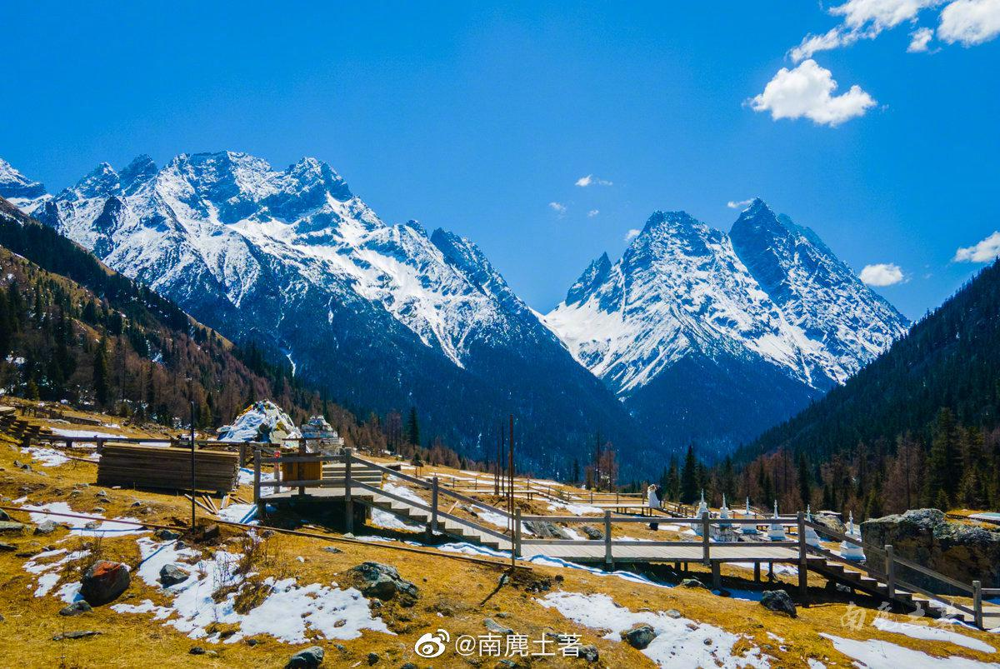
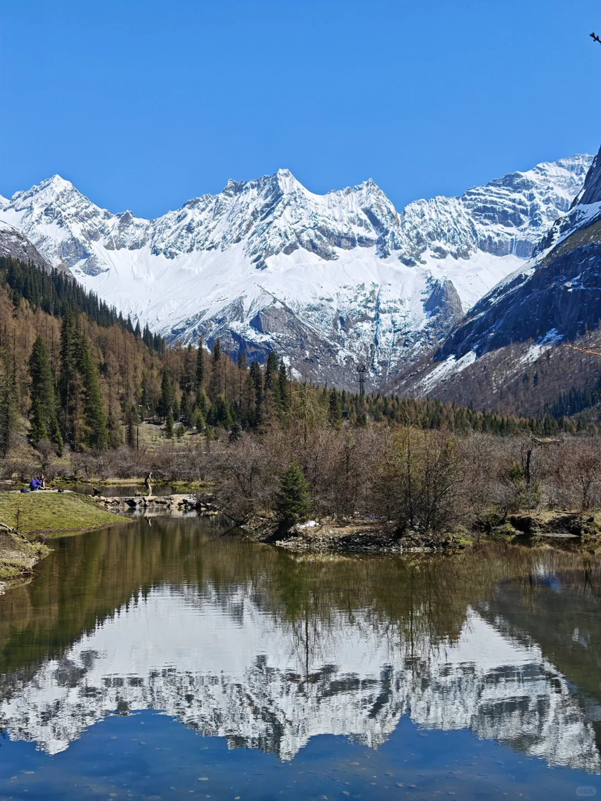
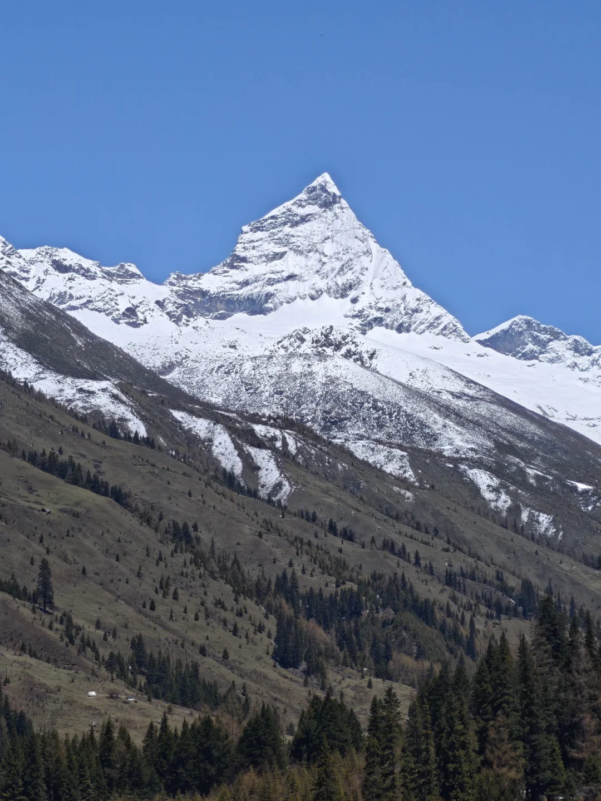
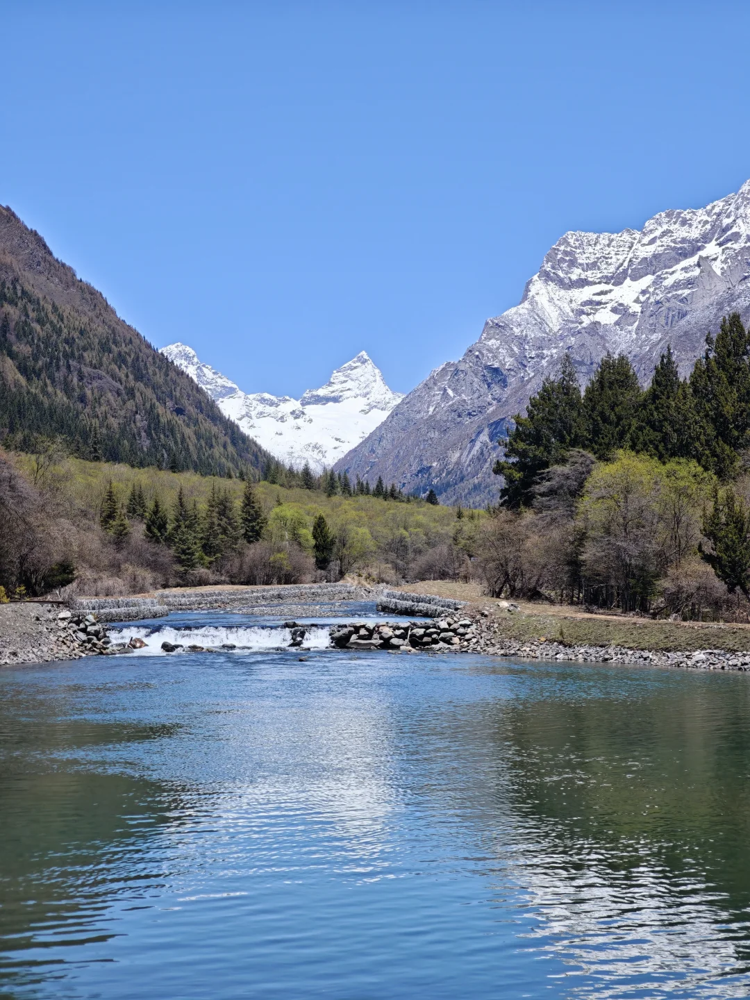

红杉林（金秋彩林之王）
观光大巴的最高终点站。三面被巍峨陡峭的雪峰巨壁环抱，谷底生长着成片的四川红杉。每年 10 月中旬到 11 月上旬，万亩红杉针叶全部变成璀璨夺目的金红色，与山尖初雪相映成趣。
📸 机位与技巧： 沿木栈道环绕一周（平缓散步约 30 分钟），用广角仰拍金红树冠与背后湛蓝天空、雪白冰峰的色彩撞击。

| 沟域名称 | 门票 (旺/淡) | 观光车费 | 二次自选费用 | 游玩特性与决策建议 |
|---|---|---|---|---|
| 双桥沟 (力推必去) | ¥80 / ¥50 | ¥70 (必买) | 漂流自选 ¥90/人 | 性价比之王：全程观光大巴串联，景点间平地木栈道漫步，无二次车费，老少皆宜。 |
| 长坪沟 (户外轻徒步) | ¥70 / ¥50 | ¥20 (仅前段7km) | 骑马往返 ¥150~360 | 观光车仅到喇嘛寺，深入木骡子看幺妹峰全靠徒步(单程14km)或骑马，适合徒步爱好者。 |
| 海子沟 (纯硬核探险) | ¥60 / ¥40 | 无观光车 | 骑马全天约 ¥300~400 | 无机动车，纯徒步或骑马看高原海子（大海子/花海子），通常为重装登山露营者路线。 |
通达模式： 观光车一站直达最高点【红杉林(3840m)】，自上而下逐站下车游玩（布达拉峰 ➔ 四姑娜措 ➔ 撵鱼坝 ➔ 盆景滩 ➔ 人参果坪），各站大巴招手即停。
✅ 优势：0难度、不耗体力、全景观赏雪山彩林公路、带老人小孩无压力、仅需半天即可游完。
通达模式： 观光车仅到喇嘛寺(3200m)，往后深入枯树滩、木骡子(3800m)全靠双脚或马帮，往返长达 28 公里高海拔泥土路，需耗时 6-8 小时。
⚠️ 劣势：体能要求高、耗费整天时间；若不走到木骡子，前段仅在密林中行进视野受限。
📌 游客实测样本（博主 Suburb. 于 2024 年五一假期实地游玩，2026-09-19 整理）： 双桥沟四小时速通攻略。个人笔记用于补充停靠节奏，票价、开放点位与末班车以景区当日公告为准。
观光大巴的最高终点站。三面被巍峨陡峭的雪峰巨壁环抱，谷底生长着成片的四川红杉。每年 10 月中旬到 11 月上旬，万亩红杉针叶全部变成璀璨夺目的金红色，与山尖初雪相映成趣。
四姑娘山最火爆的小红书封面机位。笔直平整的沥青公路伸向视野尽头，正前方是拔地而起的布达拉峰（因极似西藏布达拉宫金字塔造型而得名）。两旁彩林环抱，雪山压迫感扑面而来。

游览第 3 站 · 珠噶纳措 (布达拉峰深入)从布达拉峰徒步抵达的独立子景点，正文明确对应图8，现从布达拉峰组合卡中拆出单独展示。
清澈宁静的高山海子中，伫立着成群历经数百年不腐的冷杉枯木。碧绿如玉的湖水倒映着阿妣山与猎人峰的险峻身姿，水草随微波摇曳，充满超凡脱俗的静谧与水墨意境。

游览第 5 站 · 阿妣山 (四姑娜措远眺)四姑娘的外婆山，在四姑娜措远眺可见。山峰险峻巍峨，山尖积雪与云雾交织，是双桥沟深处极具辨识度的高山雪峰背景。

游览第 6 站 · 银瀑雍措与云端服务中心云端服务中心中转站所在处。高山瀑布跌落汇聚成海，四周山色秀丽。此处为全沟重要交通节点，需在此步行换乘前往人参果坪的景交车。
双桥沟出沟前的宽阔高山草甸。清澈溪流在草滩中蜿蜒穿流，牦牛悠闲漫步，远处雪峰连绵，展现出恬静的高原牧场风光。
已按小红书博主 Suburb. 正文完整展示全部下载完成的子景点实拍照片（拍摄于 2024 年五一假期）：图3–4＝红杉林，图5–7＝布达拉峰段，图8＝珠噶纳措，图9–10＝四姑娜措，图11＝阿妣山，图12＝银瀑雍措，图13–14＝人参果坪。图片来自五一春雪期实拍，用于佐证景区子景点归属与真实动线。